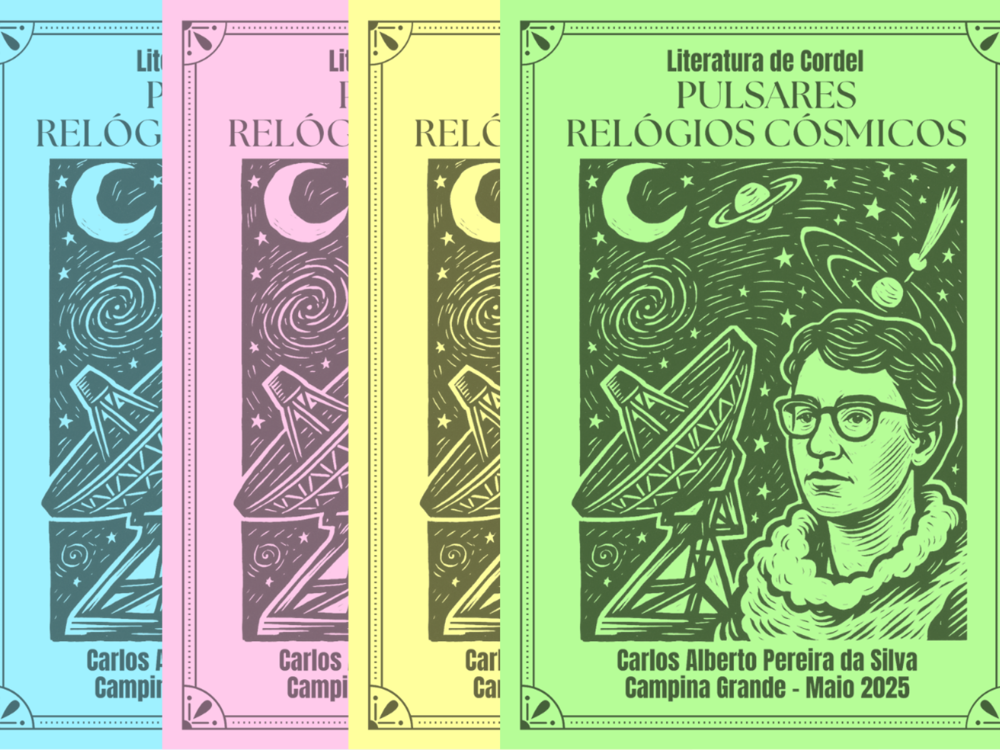

Literatura · Ciência · Educação
Radioastronomia em Cordel
Projeto que utiliza a literatura de cordel para apresentar histórias, personagens, descobertas e conceitos relacionados à radioastronomia, aproximando ciência e cultura popular.
Conheça →